IB Docs (2) Team
IB Docs (2) Team

Unit 2.8(3): Government intervention to manage externalities, merit and demerit goods
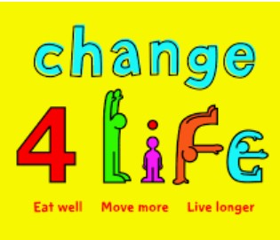
We know from the previous chapters that cover externalities along with merit and demerit good that they lead to market failure. Without any government, intervention resources are misallocated and the welfare of a country’s citizens is not maximised. Governments intervene when there is market failure to affect resource allocation and improve the welfare of their country's citizens. Governments do this by trying to move output in markets where there is market failure closer to the socially efficient level where social costs equal social benefits.
Policies to deal with external costs and demerit goods: 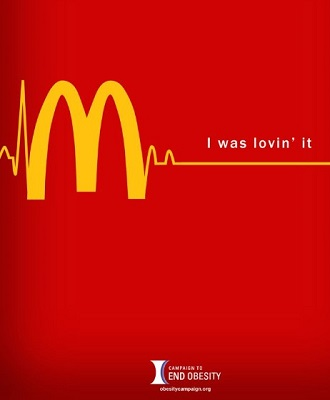
- Tax
- Regulation
- Tradable permits
- Advertising
- Education
Policies to deal with external benefits and merit goods:
- Subsidies
- Regulation
- State provision
- Advertising
- Education
Revision material
 The link to the attached pdf is revision material from Unit 2.8(3): Government intervention to manage externalities, merit and demerit goods. The revision material can be downloaded as a student handout.
The link to the attached pdf is revision material from Unit 2.8(3): Government intervention to manage externalities, merit and demerit goods. The revision material can be downloaded as a student handout.
Reasons for government intervention
We know from the previous chapters that cover externalities along with merit and demerit good that they lead to market failure. Without any government, intervention resources are misallocated and the welfare of a country’s citizens is not maximised. Governments intervene when there is market failure to affect resource allocation and improve the welfare of their country's citizens. Governments do this by trying to move output in markets where there is market failure closer to the socially efficient level where social costs equal social benefits.
Policies for external costs
The market failure associated with negative externalities leads to an over-allocation of resources and a resulting welfare loss to society. The government policies associated with dealing with negative externalities are based on the objective of trying to reduce the market output towards the socially efficient level where marginal social costs equal marginal social benefits.
One of the central problems for any government trying to apply policies to reduce negative externalities and achieve the socially efficient level of output is the problem of measuring external costs and establishing where the socially efficient level of output is. For example, governments know there are negative externalities associated with the consumption of alcohol but it is very difficult to come up with an accurate measure of the extent to which resources are over-allocated in the market. This measurement is further complicated by the existence of positive externalities associated with the market for alcohol such as employment in related industries.
Demerit goods
Many of the policies used to manage the market failure associated with consumption external costs can be used to deal with similar market failures associated with demerit goods. The application of indirect tax, regulation and demand-reducing policies can all be applied to demerit goods.
Taxation (Pigovian tax)
Tax on production external costs
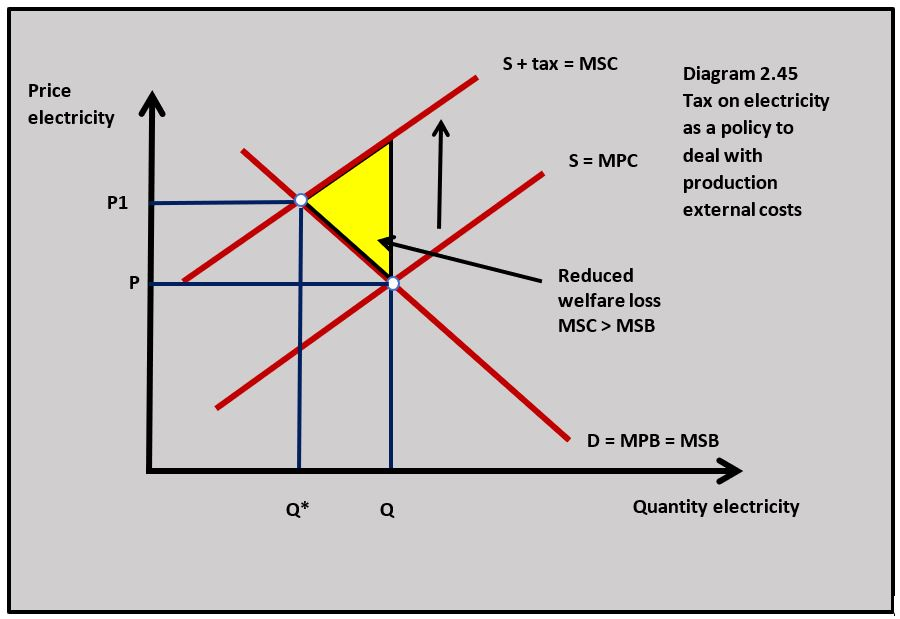
Where an industry is associated with significant negative externalities governments can impose indirect taxes on producers. An indirect tax adds to business costs causing an increase in the price of the good and leading to a fall in output towards the socially efficient level. This is illustrated by diagram 2.45, where an energy company pays a specific tax on the electricity it produces.The tax is called 'Pigovian' because it was developed from the work of the UK economist, Arthur Cecil Pigou who did significant amounts of research on market failure.
In this example, the tax increases the market price to P1 and moves output from Q to Q1 which is at the socially efficient output at Q*. This removes the welfare loss associated with the electricity industry, although it should be pointed out that in reality achieving the exact socially efficient output is impossible.
Tax on consumption external costs
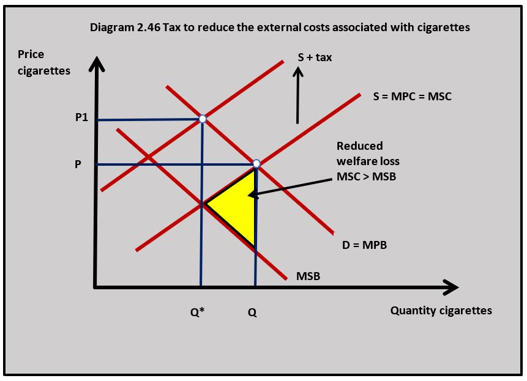
Tax can also be imposed on negative externalities of consumption. In many countries governments tax cigarettes to reduce their consumption and the associated social costs. Diagram 2.46 illustrates the impact of an indirect tax on cigarettes. The effect is similar to a tax on good on negative externalities of production, with the price of cigarettes increasing to P1 and the output of cigarettes being reduced from Q to Q* at the socially efficient output. The tax removes the yellow welfare loss triangle.Advantages of using tax:
- Tax revenue can be used to compensate affected third parties and to pay for the negative consequences of an externality. For example, the tax revenue from cigarettes can be used to pay for some of the healthcare costs of people who smoke.
- Increasing price is an effective way of reducing consumption and production.
Disadvantages of using tax:
- Tax can reduce the welfare of low-income groups where the price of a good is a significant proportion of their income. For example, a tax on petrol can have a significant impact on the incomes of poorer households who rely on their cars.
- Increasing business costs can lead to lower business profits and even business failure. Increasing tax can be particularly significant for small businesses.
- If business costs rise in industries such as energy this could lead to a higher average price level in the economy and increase inflation.
- The tax can make domestic firms uncompetitive on international markets and lead to a fall in exports.
- If business output decreases because of the tax increase it can cause unemployment to rise in an industry.
The Cambridge University-based economist, Arthur Pigou was widely known for his work on welfare economics. He developed the work of Alfred Marshall on the concept of externalities. Pigou saw the existence of externalities as a reason for government intervention in markets. He strongly believed in the use of taxation as a way of dealing with external costs. He also believed the under-consumption of goods associated with positive externalities justified the use of subsidies. This approach to externalities is known as Pigovian taxes and subsidies.
 Worksheet questions
Worksheet questions
Questions
a. Explain two negative production externalities associated with the airline industry. [4]
When aeroplanes take off and land at an airport there will be considerable noise pollution that will disturb people who live near the airport and be an external cost to them.
Airline fuel pollutes the atmosphere and adds to CO2 emissions and adds to climate change which is an external cost to everyone in society.
b. Using a diagram explain the impact of a Pigovian tax on the airline market. [4]
The Pigovian tax adds to the cost of airline businesses and causes the price of airline tickets to increase. This cause the price of tickets to increase from P to P1 and output falls from Q to Q* in the market which is the socially efficient output. This removes the welfare loss triangle from the market.
Investigation
Research into another economist involved in welfare economics.
Regulation
Regulation of production external costs
The government can use legislation to regulate markets associated with external costs. Governments can regulate production externalities by requiring firms to meet certain criteria when they are producing goods and services. For example, airlines flying into international airports are not allowed to land and take off between 23.30 and 0600. The construction industry is subject to government regulations when it is planning building projects and needs to meet different planning regulations. There are regulations on certain substances such as asbestos that cannot be used in manufacturing processes.
Regulation of consumption external costs
The strictest form of regulation is to make the consumption and production of a good with significant external costs illegal. This is the case with recreational drugs like cocaine and heroin where consumption and production are illegal in most countries.
It is also possible for governments to allow the consumption and production of a good but control the market. Alcohol, for example, is a legal recreational drug but its consumption is controlled in many countries in the form of age restrictions, licensing hours, licensed retailers, restricted consumption in public places, restrictions on advertising and the products need to have health warnings on their packaging.
Advantages of regulation:
- They can be targeted more specifically at a negative externality than taxation. If the main pollutant in the production of a good is a specific chemical, then a regulation can deal more specifically with that problem than a tax.
- Whilst regulations can cause an increase in costs, they are less likely to lead to an increased price than a tax if the firm can comply with the regulation relatively easily.
Disadvantages of regulation:
- The cost of implementing legal restrictions can be significant for governments. For example, governments spend huge amounts of money on their anti-drug law enforcement programmes.
- Parallel markets arise in regulated markets and the goods provided can be in the hands of criminal gangs. This is a particular problem in the recreational drugs market.
- Regulations can drive up business costs increasing prices for consumers. For example, regulations on the burning of fossil fuels and CO2 emissions have increased the cost of electricity.
- Firms can find their way around regulations.
- Businesses often locate production facilities in countries with lower regulations, which adversely affects domestic employment and can move the externality problem to another country.
In 2012 the UK government passed legislation that forced supermarkets to keep the different cigarette brands they sold in cabinets rather than have them on display in the supermarket. This regulation was extended to smaller shops in 2015. The regulation was introduced to try and reduce consumer exposure to cigarette brands 'in-store' which is a method cigarette companies use to promote their products. The cabinet regulation is seen as particularly important to restrict cigarette exposure to children. The cabinet regulation could be seen as another example of how Nudge Theory has been used to reduce cigarette consumption.
Worksheet questions
Question
Using a real-world example, evaluate the effectiveness of regulation as a policy to decrease the market failure associated with the consumption of cigarettes. [15]
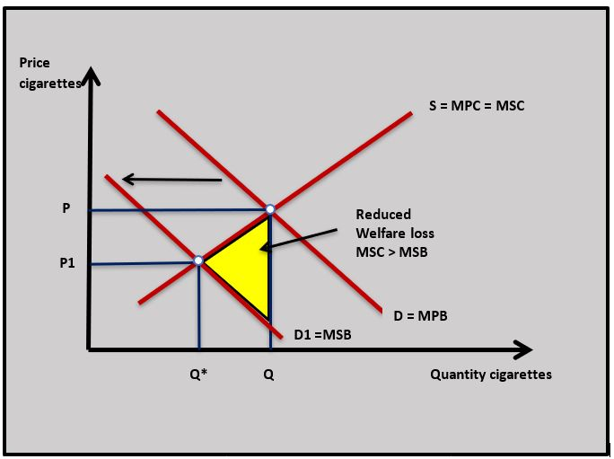
Answers might include:
- Definitions of regulation and market failure.
- A diagram to show how regulation would reduce the demand for cigarettes and move market output closer to the socially efficient level. This is shown in the diagram where demand shifts from D to D1 and output falls to the socially efficient level at Q*.
- An explanation of how the regulations which set out the way cigarettes have to be presented by retailers are used to reduce the demand for cigarettes. This might involve making retailers put cigarettes in a cabinet so they are not openly on sale to buyers.
- An explanation that the government could use regulations that force cigarette manufacturers to put pictures of the illnesses caused by cigarettes on the packets instead of a brand name and logo to reduce demand.
- An explanation that cigarette manufacturers that sell cigarettes are not allowed to promote cigarettes at the point where the cigarettes are sold. This regulation reduces the demand for cigarettes.
- An example of the application of regulations used by the UK government to reduce the demand for cigarettes and correct the market failure associated with the consumption of cigarettes.
- Evaluation might include a discussion of the cost of administering the policy by the government and questions about the effectiveness of the regulations. The answer could also consider alternative policies to reduce the consumption of cigarettes such as taxation.
Investigation Research into another market where Nudge Theory is being used to reduce the consumption of a good.
Tradeable per.jpg) mits
mits
The last 20 years have seen a rise in the market for tradeable permits or cap and trade schemes, which are a market solution to the problem of external costs. The market for CO2 emission permits has become an increasingly important measure used to control the negative externalities associated with C02 pollution as a contributor to climate change.
The system for carbon trading works in the following way:
- The government sets a total limit on the carbon emissions it will allow from an industry.
- The total of carbon emissions is then divided up amongst producers that emit carbon and they are allocated a CO2 allowance.
- The producers are not allowed to emit more CO2 than their allowance.
- This gives producers in the industry an incentive to reduce their CO2 emissions because they can sell any unused allowance they have to less carbon-efficient producers.
- If the government reduces the number of permits their price and value rise and there is a greater incentive for producers to reduce their emissions.
To be truly successful in addressing climate change the carbon trading system needs to be an international market and the emission limits need to be policed effectively. The current market for CO2 permits is worth about $82 billion.
Advantages of tradeable permits:
- Carbon credits create an incentive system that is more effective at reducing CO2 than a tax that firms need to pay whatever their carbon emissions.
- Using an incentive-based system facilitates innovation and firms develop technology to reduce pollution.
Disadvantages of tradeable permits:
- The system is complicated and expensive to set up and administer.
- The number of permits allowed needs to be tightly controlled at an international level to have any impact on CO2 emissions and some countries may not follow the system.
- The permits add to business costs and lead to higher prices.
Reducing demand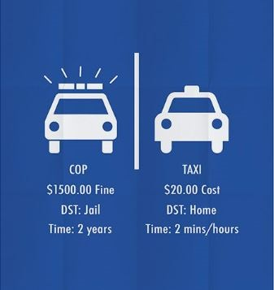
An alternative way of dealing with negative externalities is to reduce the demand for the good associated with the negative externality to the socially optimum level of output. This can be done through government-financed advertising campaigns. Many countries run advertising campaigns that try to persuade people to give up smoking or taking recreational drugs. Similarly, governments run education programs that inform people of the hazards associated with smoking, drinking alcohol and taking recreational drugs.
It is also possible for governments to reduce the demand for goods associated with negative externalities by subsidising products that are substitutes for the ones with the negative externality. For example, subsidising public transport causes the demand for private car use to fall along with the negative externalities associated with the use of cars.
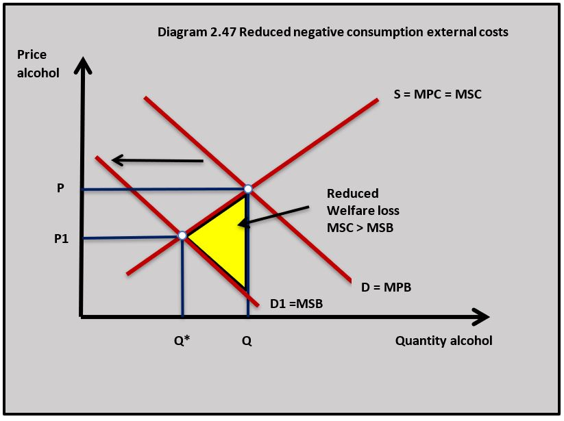
Diagram 2.47 shows how an effective advertising campaign against drinking alcohol reduces its demand, which in turn reduces the external cost associated with its consumption. In this example, the welfare loss is removed as D shifts to D1.Advantages of reducing demand
- Advertising does not add to business costs so the price of goods does not increase.
- For some consumption negative externalities such as cigarettes and alcohol, this approach might be more effective as a long-term solution to the problem because it changes consumer behaviour.
Disadvantages of regulation:
- There is an opportunity cost to the government of paying for advertising, education and subsidies.
- The effectiveness of advertising and educational programmes are difficult to measure and are sometimes questionable.
Increasing international awareness of the impact plastic bags are having on the environment has led more and more governments to take action against plastic bags made from polyethylene which takes about 1000 years to biodegrade. A recent UN report said that around 800 species including fish, birds, turtles, dolphins and whales get entangled in or ingest plastic waste which leads to suffocation, starvation, and drowning.
This is an emotive topic and politically powerful. Many governments such as Kenya, Italy and China have banned disposable plastic bags. Other nations such as Denmark, Ireland and the UK have used a plastic bag tax where a small levy is charged on the use of disposable plastic bags. In the UK it is 10p per bag. The small charge on plastic bags has been seen by behavioural economists as a successful 'nudge' to reduce consumption because the small charge was successful at changing buyer behaviour.
Questions
a. Using a diagram explain the impact the 10p tax would have on the market for plastic bags. [4]
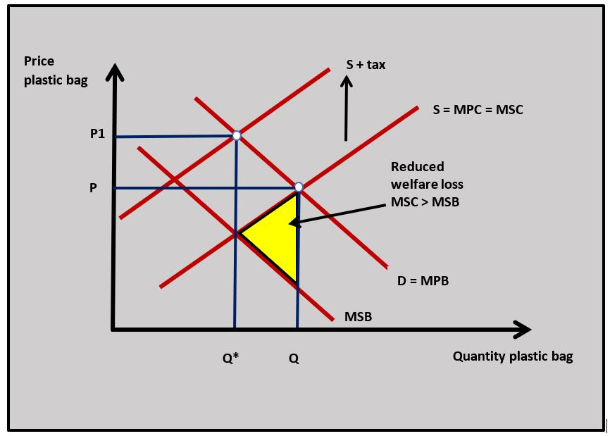
The 10p tax on plastic bags would shift the supply curve for the bags upwards by the amount of the tax and cause quantity demanded to fall and output of plastic bags to decrease to the socially efficient output at Q* in the diagram.
b. Outline what you understand by the term Nudge Theory. [2]
Nudge Theory means using choice architecture (the way choices are presented to individuals) to encourage people to make decisions that will improve their welfare and society’s welfare.
c. Explain why the plastic bag tax might be described as a successful application of Nudge Theory [4]
The 'nudge' in the case of the tax bags is the change to the choice architecture facing people who might choose to use a disposable plastic bag to carry their shopping. The charge is a relatively small amount but it has an impact on consumers because they have to pay for something that was originally free. The charge also puts the negative consequences of plastic bag use in the mind of the consumer. The outcome of the plastic bag tax policy was a significant reduction in the use of disposable plastic bags.
Investigation
Choose a country and research into the policies it uses to reduce the use of plastics in different markets.
Policies for external benefits
The market failure associated with positive externalities leads to an under-allocation of resources and a resulting welfare loss because society misses out on the potential welfare gain from producing at the socially efficient output. The government policies associated with dealing with positive externalities are based on the aim of trying to increase the market output towards the socially efficient level where marginal social costs equal marginal social benefits. One of the central problems for any government trying to apply policies to increase output to achieve the socially efficient level is measuring external benefits and establishing where the socially efficient level of output is.
Merit goods
Government policies aim to encourage the consumption and production of merit goods. This is the same set of policies discussed with positive externalities: subsidy, state provision, regulation, advertising and education are applied to merit goods.
Subsidies
Subsidies on external benefits of consumption
When positive externalities exist in a market the government aims to increase market output to the socially optimum level. The payment of a subsidy provides a financial incentive for producers to increase output, and consumers to increase consumption of a good associated with positive externalities. For example, governments subsidise anti-malarial drugs to make them more affordable in developing countries.
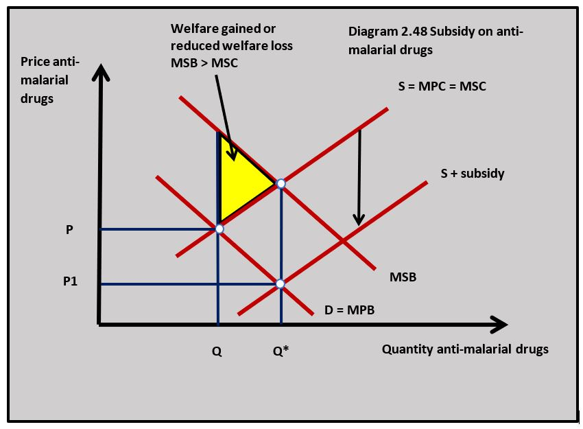
Diagram 2.48 shows the impact of the subsidy on anti-malarial drugs. Initially, the market output is at Q below the socially efficient level at Q*. There is a potential welfare gain equal to the yellow shaded area. When the subsidy is added by the government the price falls from P to P1 and output rises to the socially efficient level at Q* and welfare is gained.
Subsidies on production external benefits
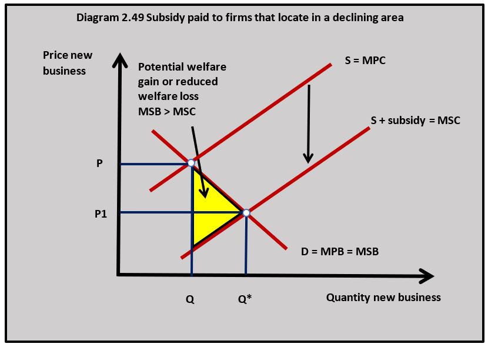
By subsidising the production of a good with positive externalities firms are encouraged to increase output towards the socially efficient level. Subsidies are often paid to firms who locate in areas of industrial decline because the positive externalities of their location help to stimulate regional economic growth. Diagram 2.49 illustrates the effect of a subsidy paid to businesses that locate in an area that has suffered from significant industrial decline. The price falls from P to P1 and output increases to the socially efficient output at Q*.Advantages of subsidies:
- Subsidies create direct financial incentives that will increase output and capture the welfare gain from external benefits.
- Low-income consumers benefit from lower-priced goods particularly if they are on necessity goods such as healthcare products.
- Producers will be encouraged to increase output which creates employment.
Disadvantages of subsidies:
- There is an opportunity cost to the government of the subsidy in terms of other public services they could have financed.
- The subsidy might take resources away from other products. A subsidy on, for example, anti-malaria drugs may take resources away from drugs for other illnesses such as HIV
- Subsidies are often paid to high-income groups such as rich people benefiting from subsidised healthcare.
- Subsidies can lead to a welfare loss where inefficient producers are drawn into the market.
Research by Green Peace suggests one in five of the biggest recipients of European farming subsidies in Britain are billionaires and millionaires. Rankings produced by Greenpeace of the 100 companies and landowners receiving the biggest basic payments under the EU’s Common Agricultural Policy. Billionaire Sir James Dyson's farming business was the biggest private recipient of EU basic payments in the UK last year, receiving £1.6 million. Another recipient is The Highland Wagyu beef farm owned by Mohsin Al-Tajir, the son of a billionaire former UAE ambassador to the UK, whose cattle are pampered in "zen-like" buildings, and whose luxury beef is used by Michelin star chefs, is also now in the top 100.
Farming subsidies do have external benefits. Everyone benefits from a well-maintained countryside and low-cost high-quality fresh produce benefits people’s health.
Question
Using European farming subsidies as an example, evaluate the view that subsidies are the best way to make healthy food affordable to low-income households. [15]
Answers should include:
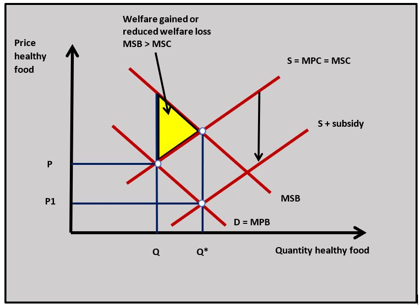
- Definitions of subsidies, and positive externalities.
- A diagram to show the impact of subsidies on the market for healthy food. In the diagram shown the subsidy applied increases supply and this increases output to the socially efficient level at Q*.
- An explanation that the subsidy on healthy food will increase output in the market for healthy food to the socially efficient level.
- An example such as of how EU farming subsidies can make healthy food more affordable to low-income households.
- Evaluation of the effectiveness of EU farming subsidies to make healthy food more affordable for low-income households. This might consider the problems of subsidies such as the opportunity cost to the government; subsidy payments that benefit high-income consumers; inefficient resources being drawn into certain agricultural markets and consideration of alternative policies to increase the consumption of healthy food (price ceiling, education and advertising).
Investigation
Research other subsidy schemes to see if they lead to the same kind of costs and benefits.
State provision
The government could choose to take the provision of merit goods and other goods associated with significant positive externalities into the public sector and provide the goods themselves at the socially efficient level of output. This is particularly true in the healthcare and education markets where the provision of these merit goods is seen as being so important to society.
Advantages of state provision:
- Government provision of merit goods is the most direct way of increasing output towards the socially efficient level.
- Many people believe the state is more likely than the private sector to make decisions about the provision of merit goods that are in the public interest.
- Goods can be provided at the price (or zero price) that all households can afford. This is seen as particularly important in healthcare and education.
Disadvantages of state provision:
- The cost of providing state-run healthcare and education is extremely high and carries a significant opportunity cost to the government.
- Some people believe that state provision is less efficient than private-sector provision because state-run organisations experience diseconomies of scale.
- State-run organisations are often subject to considerable political interference which compromises their benefits to society.
Regulation
Governments believe that the consumption of some goods is so crucial to the welfare of individuals in society that the government forces people to consume them. This is particularly the case with primary and secondary school education where many countries make it compulsory for parents to send their children to school through the law. This is also the case with car insurance where individuals legally need to own third-party car insurance so people adversely affected by a car accident will be compensated.
Advantages of regulation:
- Laws compel individuals and businesses to make decisions that increase output to the socially efficient level.
- Regulations can be targeted precisely at goods and services with positive externalities.
Disadvantages of regulations:
- There can be significant costs of policing the system and enforcing regulations.
- Regulations add to business costs which can reduce employment and increase prices.
- Some people avoid the regulations and parallel markets can develop.
Increasing demand
Governments can try to increase the demand for goods associated with positive externalities to move production and consumption towards the socially efficient level of output. For example, the state can fund the advertising of things like further education, healthy eating and exercise to increase the demand for goods and services in these markets and increase the resulting external benefits. Educational programmes can be used to increase the demand for merit goods by informing people of the benefits, for example, of vaccinating against diseases like measles.
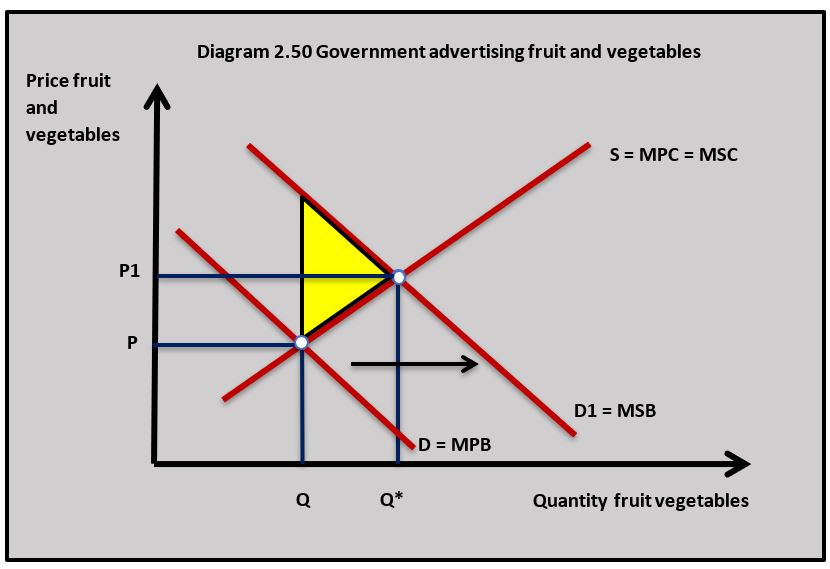
Diagram 2.50 illustrates the impact of a government advertising campaign to increase the consumption of fruit and vegetables as part of a healthy living policy. The demand curve for fruit and vegetable shifts to the right and market output increases from Q to Q1 which is closer to the socially efficient output Q*. As a result, some welfare is gained and is shown by the yellow area on the diagram.Advantages of increasing demand:
- Education and advertising are not as expensive as using subsidies and do not have the management problems of regulation
- The approach can be effective in altering human behaviour which is an effective long-run solution to the under-provision of goods associated with positive externalities.
Disadvantages of increasing demand:
- The opportunity cost to the government of funding advertising and educational programmes.
- It is not always easy to measure the effectiveness of advertising and educational programmes.
The UK Government has supported TV adverts to promote healthier eating. Food businesses are also involved in the Change4Life campaign where healthy products are being advertised and promoted. The adverts have been made by Aardman, the creators of Wallace and Gromit.
It is estimated that obesity costs the NHS £5bn each year. Health issues that arise from poor diet also account for a significant loss of productivity at work. If families sign-up for the Change4Life online programme they will receive a compilation of healthy recipes and tips on healthy eating.
Worksheet questions
Questions
a. Explain why healthy food can be considered an example of a merit good. [4]
Merit goods are goods that society says people should consume because they are associated with significant social benefits. Governments encourage eating healthy food because of the positive externalities associated with their consumption such as improved labour productivity at work and less use of the health service.
b. Using a diagram, explain how the Change4Life government-managed advertising campaign might increase welfare in society. [4]
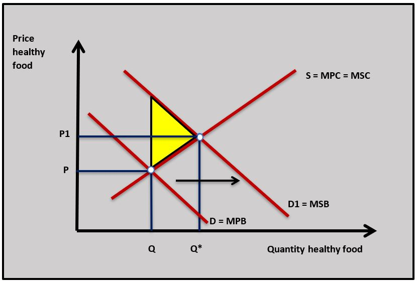
The Change4Life advertising campaign can increase the demand for healthy food and exercise goods like gyms and fitness equipment. As demand increases in the diagram for healthy food market output increases to the socially efficient level at Q* and improves welfare.Investigation
Research with your class other government-run promotion and education programmes used to increase the demand for merit goods and other goods associated with positive externalities.
Government policy to manage market failure should be about improving overall well-being in society. Whether this is taxing and regulating markets to reduce external costs or subsidising and promoting goods that increase social benefits. But like all government policy decisions, politics plays an important part as well. This year London's Royal Opera House received its £24 million annual subsidy while other forms of popular live music receive no subsidy at all.
To what extent are policy decisions made by governments influenced by the interests of the politicians that make the decisions rather than improving society's welfare?
Which of the following is a weakness of using tax as a policy to reduce negative externalities?
Indirect taxation is regressive and has a significant impact on people with low incomes.
The following data is available for negative externalities associated with a power station:
- MSB
$ 250 - MSC
$ 400 - Socially efficient output 1.2 million units
- Market output 1.7 million units
What is the value of the welfare loss?
(
Which of the following is not true in the diagram?
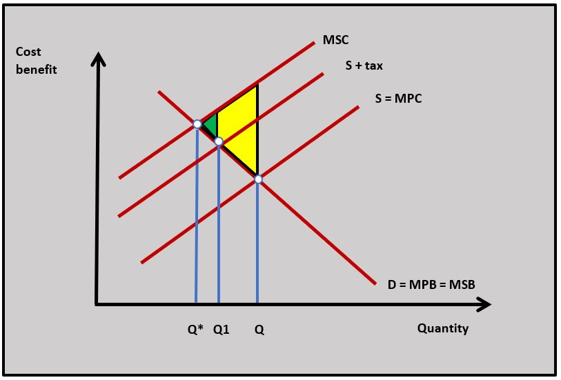
The incidence of an indirect tax is split between the consumer and the producer.
Which of the following is not a disadvantage of using regulations to reduce the negative externalities associated with car use?
For example, a regulation on cars not being allowed into city centres may well reduce the external cost of car use in cities.
Negative advertising to reduce the consumption of cigarettes has which of the following advantages?
The advantage of adverts is they might deal with the underlying cause of the over consumption of demerit goods.
Which of the following is least likely to be true of a policy to increase the demand for a merit good?
A subsidy will cause the supply curve of the good to shift downwards and not affect demand.
Which of the following policies is least likely to be effective when dealing with the market failure associated with external benefits?
Subsidies to airlines are more likely to cause negative externalities.
The following data is available for positive externalities associated with a new healthcare drug:
- MSB
$ 130 - MSC
$ 90 - Socially efficient output 0.6 million units
- Market output 0.4 million units
What is the value of the potential welfare gain if output is increased to the socially efficient level?
(
A tradable permit to reduce CO2 emission is best described as:
Tradable permits create a market to reduce CO2 emissions.
Which of the following government policies would not be appropriate to reduce C02 emissions?
A maximum price could decrease the price of electricity and increase its consumption resulting in greater CO2 emissions.
 Twitter
Twitter
 Facebook
Facebook
 LinkedIn
LinkedIn